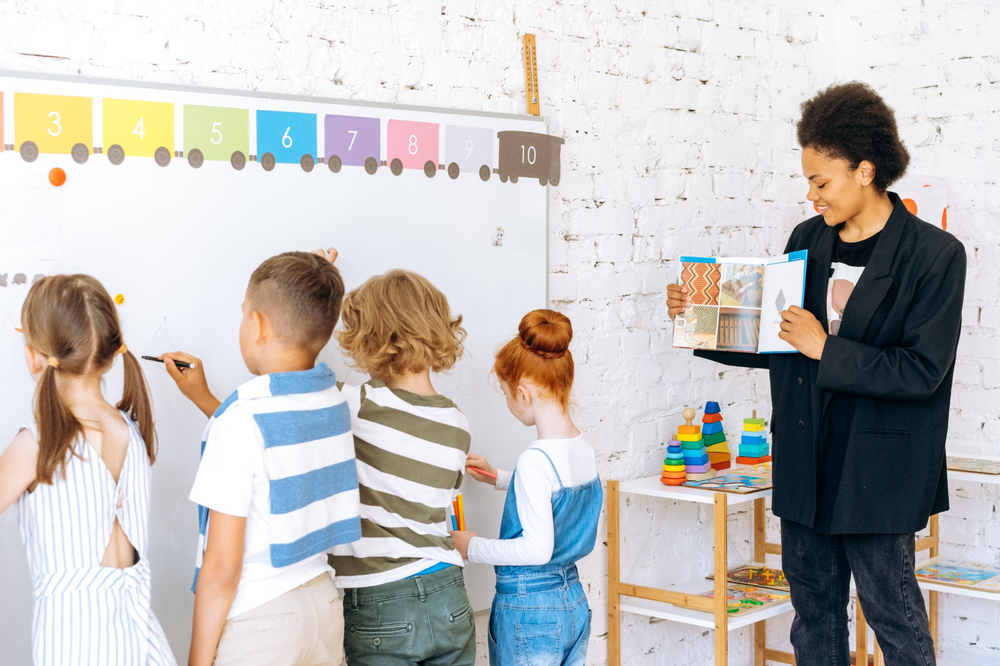
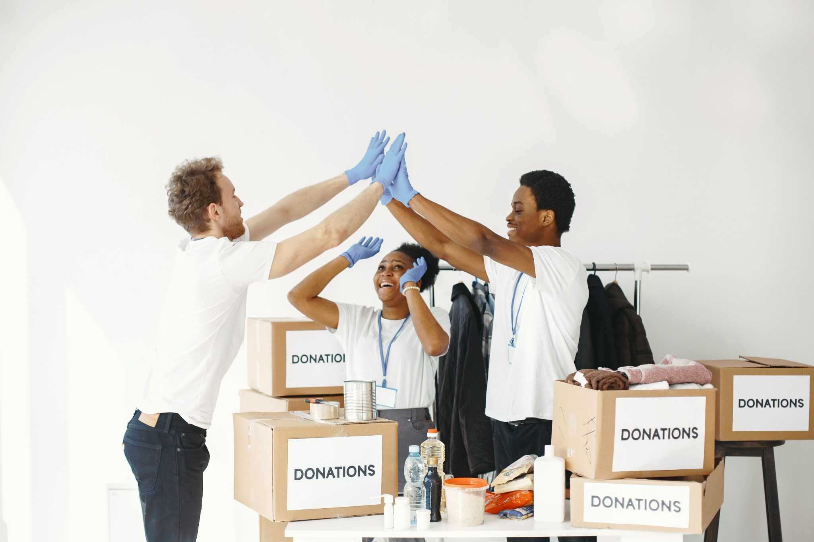
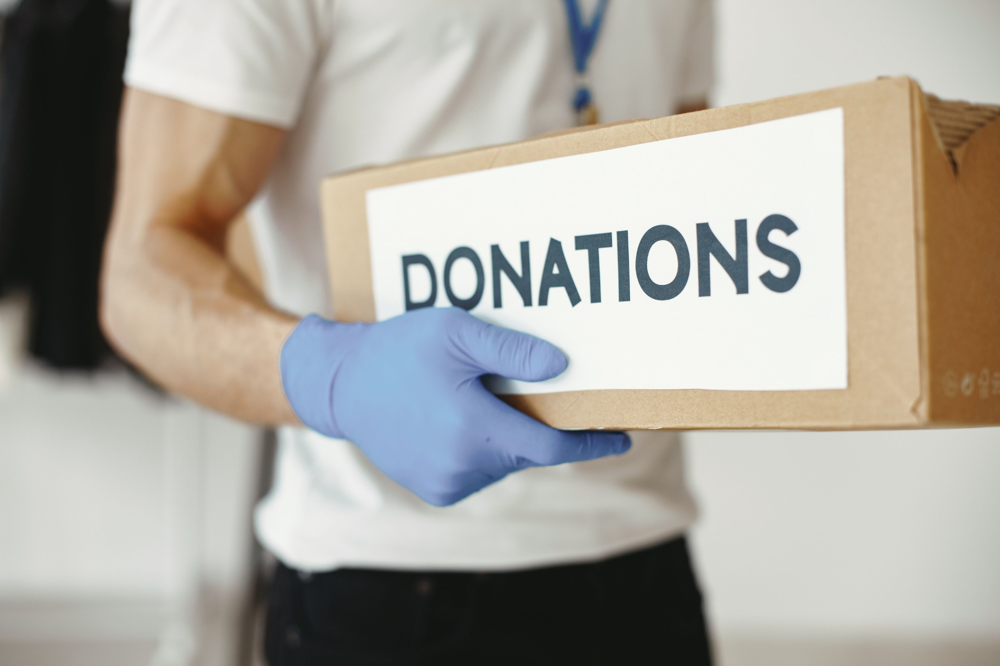

Educação para o Futuro
Oferece atividades de reforço escolar, leitura e inclusão digital para crianças e adolescentes.
Indicadores de impacto
- 120 participantes
- 8 oficinas realizadas
- 90% de frequência média
Categoria: Educação
INSTITUTO NOVA ESPERANÇA
Conheça nossas iniciativas e descubra diferentes formas de participar.

Oferece atividades de reforço escolar, leitura e inclusão digital para crianças e adolescentes.
Categoria: Educação
Campanha de arrecadação e distribuição de alimentos para famílias em situação de vulnerabilidade.
Categoria: Segurança alimentar

Você pode contribuir com seu tempo, conhecimento e habilidades.

As doações ajudam a manter os projetos e ampliar o número de pessoas atendidas.
Meta: R$ 10.000,00
Arrecadado: R$ 6.750,00